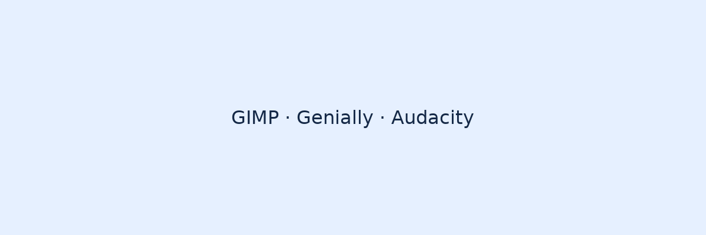

GIMP
¿Para qué sirve? GIMP es un editor de imágenes libre y gratuito similar a Photoshop; permite retoque, composición y creación gráfica.
Equivalencia: Alternativa libre a Adobe Photoshop.
Ventajas: Gratuito, con muchas funciones avanzadas, extensible mediante plugins.
Genially
¿Para qué sirve? Genially permite crear presentaciones interactivas, infografías y contenido animado para educación y comunicación.
Productos principales: Presentaciones, infografías, juegos y recursos interactivos para el aula.
Audacity
¿Para qué sirve? Audacity es un editor de audio gratuito que permite grabar, editar y aplicar efectos a pistas de audio.
Función principal: Edición multipista básica, reducción de ruido y exportación a varios formatos.
Ventajas de usar GIMP (lista ordenada)
- Es gratuito y de código abierto.
- Amplia comunidad y tutoriales disponibles.
- Compatible con muchos formatos de imagen.
- Soporta plugins para ampliar funcionalidades.